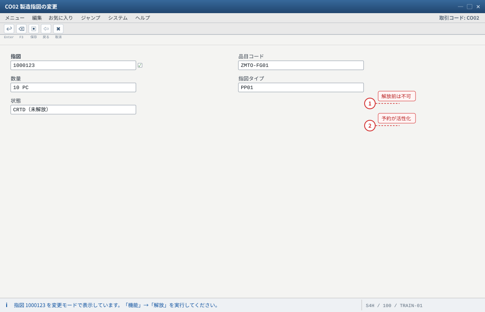
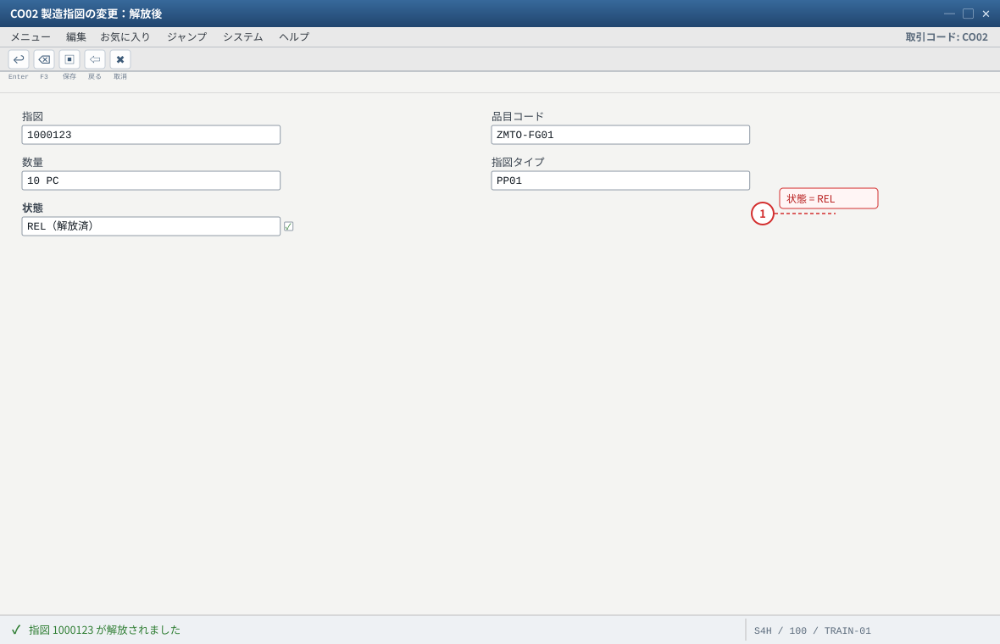
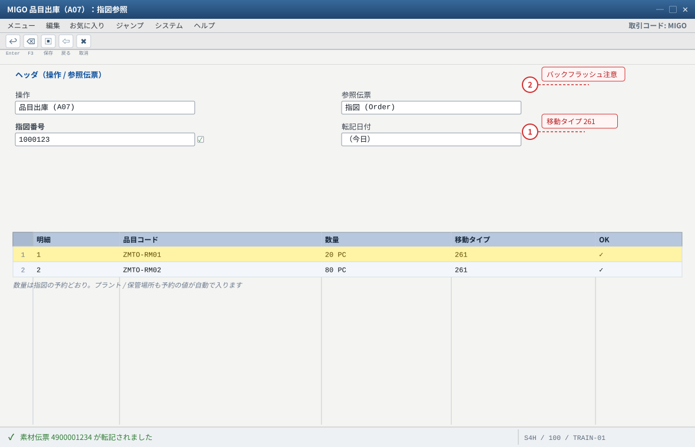
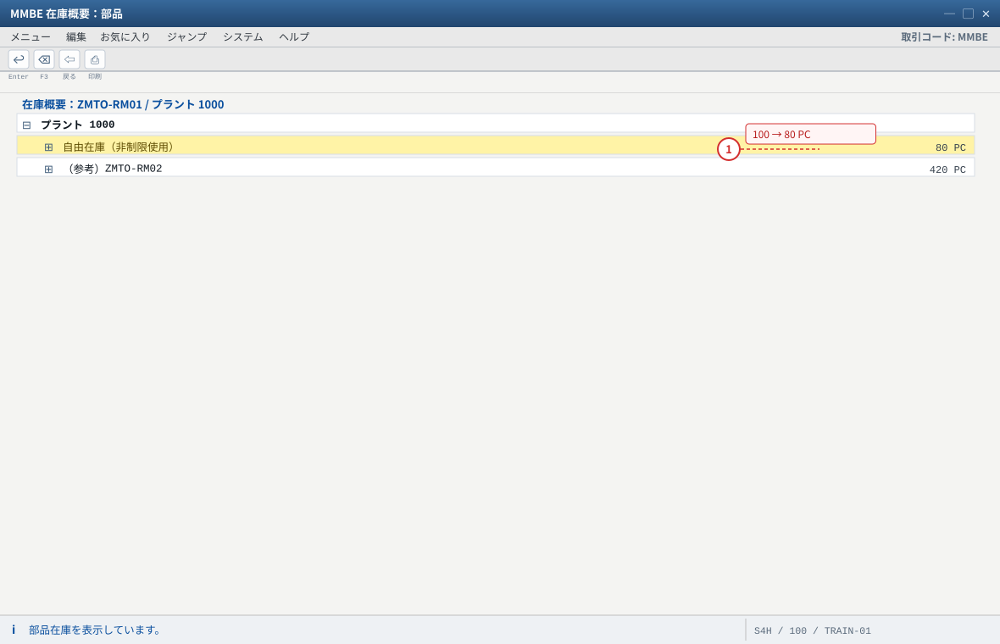
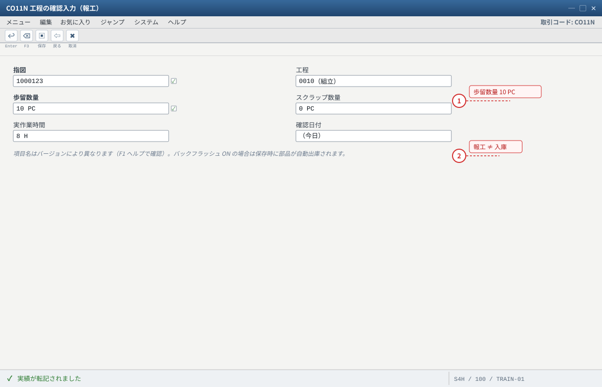
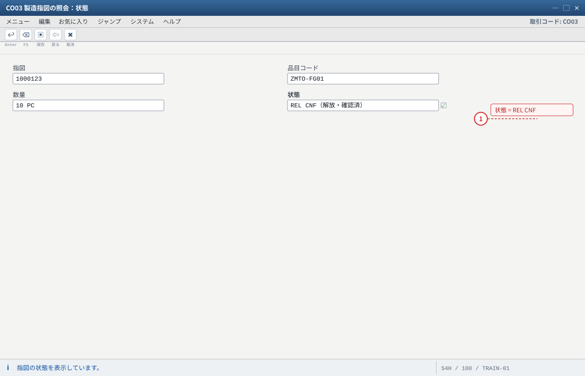
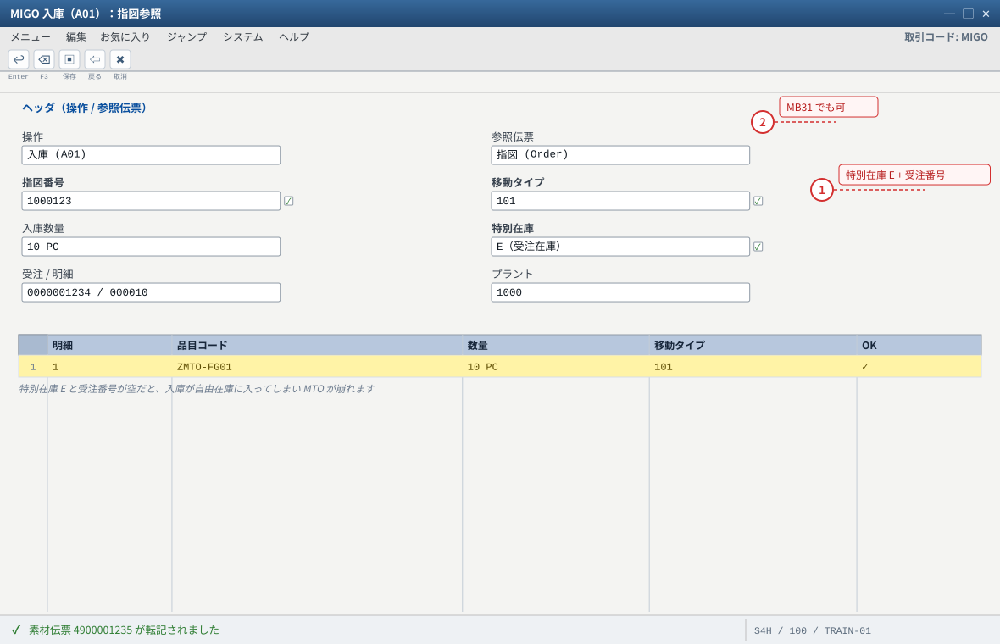
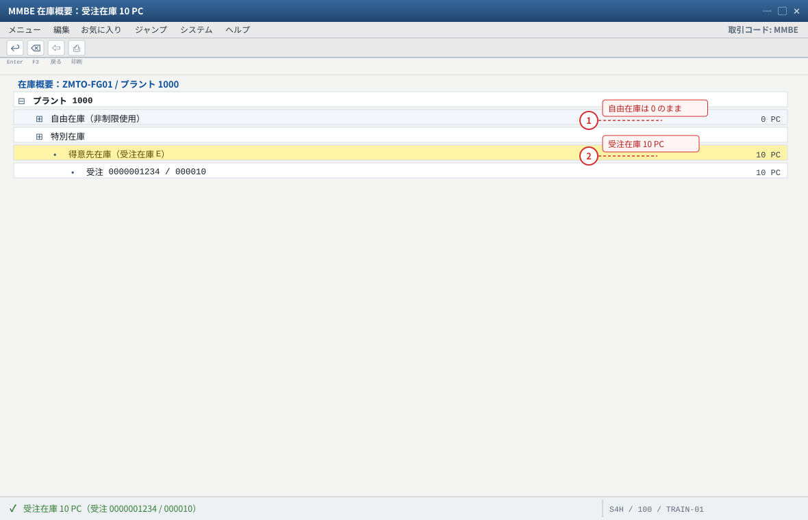
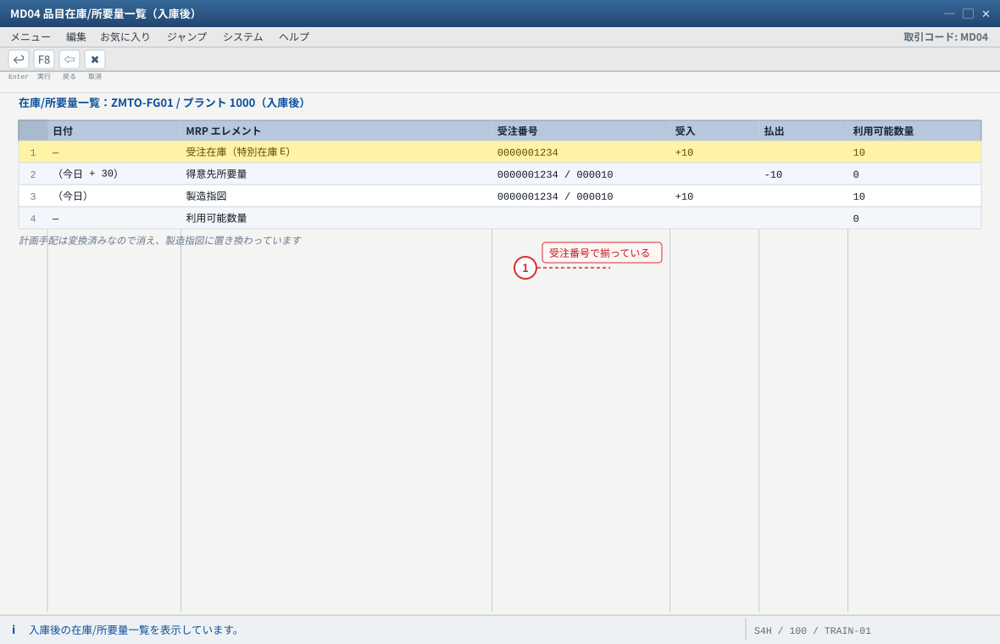
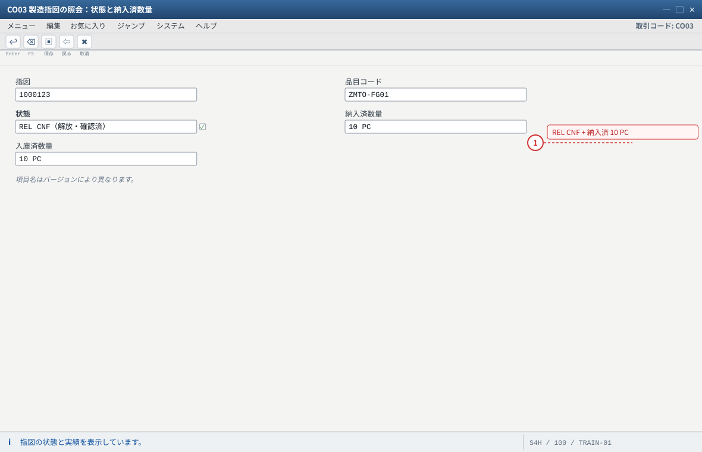

练习③ 部品出庫・製造実績・完成品入庫
.png 放进 assets/gui/ 后执行 python3 tools/swap_gui_images.py <site> --apply 即可一键替换。REL
部品 20 / 80
歩留 10
完成品 10 → E
受注在庫 10
3-0 指図の解放（CO02）
CO02→ 指図番号（练习② 记录的）→ Enter（変更モード）。- 菜单「機能」→「解放（Freigeben）」→ 状态变为 REL（同时生成/激活部品予約，出库才有依据）。
- 若弹出警告（構成品目不足、能力 等）：练习环境多在「在庫あり」的情况，可继续；若提示「予約が作れない」，回到
CO03确认構成品目数量是否正确。

- 1 解放前は出入庫も報工もできません。「解放」＝現場への指示発行です
- 2 解放すると部品予約が活性化し、261 出庫の根拠になります
自システムでの確認：警告（構成品目不足・能力など）が出ても練習環境では継続できることが多いですが、「予約が作れない」場合は CO03 で構成品目数量を確認します。

- 1 状態が REL になったことを確認してから 261 出庫に進みます
自システムでの確認：解放のメニュー位置は「機能」→「解放」。以降は 261 → CO11N → 101 の順で在庫を動かします。
3-1 部品出庫（MIGO / 移動タイプ 261）
输入值
| 项目 | 值 |
|---|---|
| 操作 / 参照伝票 | 出庫（A07 相当）/ 指図（参照：指図番号） |
| 移動タイプ | 261（指図への出庫／受注在庫用指図でも 261） |
| 明細 1 | ZMTO-RM01（板材）20 PC、プラント/保管場所は指図の予約どおり |
| 明細 2 | ZMTO-RM02（紧固件）80 PC |
| 転記日付 | 今日 |
MIGO→ 操作选择 「品目出庫 (A07)」、参照文書选择 「指図 (Order)」 → 输入指図番号 → Enter。
系统会自动带出指图所需的部品与数量（来自予約）。- 确认明細：
ZMTO-RM0120 PC、ZMTO-RM0280 PC，移动类型261，「OK」勾选状态正确。 - 「転記」→ 记下物料传票番号（例
4900001234）。 - 确认库存：
MMBE→ZMTO-RM01/1000：自由在庫 100 → 80 PC；ZMTO-RM02：500 → 420 PC。 - 确认会计：从 MIGO 的物料传票跳「会計伝票」或后续用
FB03打开——部品出库在制造成本侧会发生消耗（金额取决于部品评价）。
ZMTO-FG01 的 MRP1「バックフラッシュ」或 BOM 组件上设了自动出库时，CO11N 报工时会自动出库。
所以：要么手动 261（并确认品目未设自动出库），要么报工自动出库——若两件都做，会出入库两次（练习时可故意试一次，观察 MBST 取消与库存差异）。SE16N → MATDOC（S/4HANA 的在庫伝票）→ 输入年月 + 指図番号 → 应看到移动类型 261 的行；
旧结构的系统用 MKPF/MSEG。
- 1 移動タイプ 261 は「指図への出庫」。受注在庫用の指図でも部品は 261 です
- 2 バックフラッシュを ON にしている場合は CO11N で自動出庫されるので、手動 261 と重複させないこと
自システムでの確認：MMBE で ZMTO-RM01 が 100 → 80 PC、ZMTO-RM02 が 500 → 420 PC になります。会計伝票は FB03 で確認できます。

- 1 出庫した分だけ自由在庫が減っていること。減っていない＝261 が指図に紐づいていません
自システムでの確認：SE16N → MATDOC（S/4HANA の在庫伝票）に移動タイプ 261 の行ができます。旧構造のシステムは MKPF / MSEG です。
3-2 製造実績（CO11N）
指図 : （练习② の指図番号） 工程 : 0010（組立） 歩留数量 : 10 PC ← 良品数量 スクラップ : 0 PC 実作業時間 : 8 H（= 標準時間 1H × 10 PC を現場実績として計上。練習用の単純化） 確認日付 : 今日
CO11N→ 指図番号 → Enter → 输入工程0010、歩留数量10、スクラップ0、実作業時間（如 8H）。- （バックフラッシュ設定がある場合）「品目」タブ / 「自動出庫」に表示される部品数量を确认——这会在保存时自动出库。
- 保存 → 消息「実績が転記されました」。指图状态应增加 CNF（確認済）。
- 注意：报工只登记「生产了多少」，不会自动把成品入到受注在庫——入库是下一步 101。

- 1 歩留数量 10 PC ＝ 良品数量。ここが 10 でないと 101 入庫数量と合いません
- 2 報工は「いくつ作ったか」を記録するだけ。受注在庫への入庫は次の 101 で行います
自システムでの確認：実作業時間は標準時間 1H × 10 PC = 10H に対して 8H で入力する簡略化です（差異が見えるようにしています）。

- 1 CNF が付いたら報工は成功。次は 101 で完成品を受注在庫へ入庫します
自システムでの確認：歩留 10 PC と実作業時間は「明細 / 実績」タブで確認できます。
3-3 完成品入庫（MIGO 101 → 受注在庫 E）
输入值
操作 / 参照文書 : 入庫 (A01) / 指図 (Order) 移動タイプ : 101（指図への入庫） 入庫数量 : 10 PC 入庫先 : 受注在庫（特別在庫 E）+ 受注 0000001234 / 000010 ← 自動表示されるはず プラント : 1000
MIGO→ 「入庫 (A01)」+ 参照「指図 (Order)」→ 指図番号 → Enter。- 确认画面关键字段：移動タイプ 101、入庫数量 10、特別在庫 = E、受注番号/明細が入っているか（この 2 つが空なら入庫が自由在庫に入ってしまい、MTO が崩れます）。
- 「品目データ」タブ：品目
ZMTO-FG01、希望入庫日 = 今日、「OK」チェック。 - 「転記」→ 记下物料传票番号。
- （備考）
MB31（指図への入庫専用トランザクション）でも同じことができます。GUI の入口が違うだけ。

- 1 この 2 つの欄（特別在庫 E / 受注番号）が入っていることが MTO の要。空なら自由在庫に入ってしまいます
- 2 MB31（指図への入庫）でも同じ転記ができます。GUI の入口が違うだけです
自システムでの確認：転記後に MMBE で受注在庫が 10 PC になっていることを確認します（次の 3-4）。
3-4 受注在庫の確認（MMBE / MB52 / MD04）
MMBE→ 品目ZMTO-FG01/ プラント1000→ 特別在庫（得意先在庫）: 10 PC（受注 0000001234 / 000010 付き）が表示されること。
自由在庫（プラント在庫）は 0 のままであることも同时确认——もし自由在庫に 10 入っていたら、3-3 の特別在庫が空だったということです。MB52→ 品目ZMTO-FG01→ 一覧に「特別在庫」列つきで 10 PC が見えること。MD04→ 行が更新されているはず：
・受注在庫（得意先在庫）+10
・得意先所要量-10
・計画手配は変換済みなら消え、製造指図+10に置き換わる
・利用可能数量0- （表层面）
SE16N→MSKA（特別在庫数量）：SOBKZ = E、KDAUF/KDPOS= 受注番号/明細、数量 10 が記録されていること。「受注在庫は本当に表に書かれている」ことを自分の目で確認してください。

- 1 自由在庫が 0 のままであることを同時に確認。自由在庫に 10 入っていたら 3-3 の特別在庫が空だったということです
- 2 受注番号まで付いた 10 PC が受注在庫です。これが練習④ の出庫対象になります
自システムでの確認：MB52 でも同じ行が見えます。表 MSKA（特別在庫数量）に SOBKZ = E / KDAUF / KDPOS / 数量 10 のレコードができています（SE16N）。

- 1 需要（得意先所要量）と供給（受注在庫・指図）が同じ受注番号で揃っていること＝ MTO の在庫が成立
自システムでの確認：表示切替の「得意先別 / 受注別」で、この受注だけの在庫と需要を並べて見られます。
3-5 指図與受注的状態確認
CO03→ 指図 → 「ヘッダ」タブ：状態 = REL CNF（解放・確認済）、入庫済数量（例「納入済数量 10」）を确认。CO03→ 「明細」/「実績」：歩留 10 PC、実作業時間、部品消費（261 の実績）が计上されていること。VA03→ 受注 → 明細の「状態」欄：「指図登録済」（まだ出荷はしていないので「未処理/一部納入」等の表示）。- （可选）
COOIS→ 製造指図一覧 → 用受注番号/品目筛选，确认指图能按受注检索。

- 1 REL CNF で、10 PC が受注在庫へ入庫済み。この指図の仕事はここで完了です
自システムでの確認：COOIS（製造指図一覧）で受注番号や品目で絞り込むと、指図をまとめて確認できます。
期待结果汇总（本练习做完）
| # | 确认项目 | 期待值 | 确认方法 |
|---|---|---|---|
| 1 | 指図状態 | REL CNF、入庫済 10 PC | CO03 |
| 2 | 部品在庫 | RM01 100 → 80、RM02 500 → 420 | MMBE/MB52 |
| 3 | 受注在庫（特別在庫 E） | 10 PC（受注番号・明細付き） | MMBE/MB52/SE16N: MSKA |
| 4 | 自由在庫（プラント在庫） | 0（入库没有漏到自由库存） | MMBE |
| 5 | MD04 の行 | 受注在庫 +10 / 得意先所要量 -10 / 製造指図 +10 / 利用可能 0 | MD04 |
| 6 | 在庫伝票 | 261（部品出庫）と 101（完成品入庫）が各 1 件 | MATDOC（/MSEG） |
| 7 | 受注明細状態 | 「指図登録済」 | VA03 |
つまずきと対処（本练习版）
| 症状 | 最可能的根因 | 确认 / 対処 |
|---|---|---|
| 261 で「指図に部品予約がない/予約数量を超過」 | 指図が未解放、構成品目が再展開されていない、または既に出庫済 | CO02 解放 → CO03 構成品目を确认 → 残数量で出庫。MBST で取消してやり直し可 |
| 261 で「保管場所が指定されていない」 | 予約に保管場所がない（BOM 组件/指図に未指定） | MIGO 明細で保管場所（例 0001）を手入力 |
| 101 後の在庫が自由在庫に入った | 指図に入庫先の受注在庫が無い（受注明細参照なし）／手入力で消えた | MBST で入庫を取消 → CO03 で受注明細参照を确认（無ければ 练习② の CO08 で作り直す）→ 再入庫 |
| MMBE に受注在庫の行が出ない | MRP4 個別/包括所要量 が空 or 所要量クラスに個別在庫なし（＝E 特在そのものが成立していない） | C2/C10 |
| 部品在庫がマイナスになった | 予約数量超の出庫、または在庫不足のまま出庫を許可 | MMBE 复核；MBST/MIGO 取消 → 补库存（561）→ 重新出库 |
| CO11N で「確認数量が指図数量を超過」 | 歩留 + スクラップ > 指図数量 | 数量を調整（例 10 / 0） |
| 101 で「数量が入庫予定を超過」 | 指図数量が 10 未満、または既に入庫済 | CO03 の入庫済数量を确认 |
| 取消したい（練習でやり直したい） | — | 入出庫：MIGO → 该伝票を表示 → 「取消」／MBST。実績： CO13（工程確認の取消）。指図自体： CO02 → 「削除フラグ/技術完了」 |
验收（完成基准）
- 指図を解放（REL）し、261 で部品 20 / 80 を出庫した（在庫がそれぞれ 80 / 420 になった）。
CO11Nで歩留 10 PC を報告し、指図状態がCNFになった。MIGO101 で 10 PC を受注在庫（E）へ入庫した（自由在庫は 0 のまま）。MMBEで「特別在庫 E 10 PC（受注番号付き）」を確認し、SE16N: MSKAで表レベルでも確認した。MD04の 4 行（受注在庫 / 得意先所要量 / 製造指図 / 利用可能）を自分の言葉で说明できる。- 取消手順（
MBST/CO13）を 1 つ試し、元に戻せた（または戻し方を説明できる）。
② 部分入庫：101 で 6 PC だけ入庫 → MD04 の「受注在庫 6 / 残り 4 は指図」を見る（允不允许部分交货，是业务要件）。
③ 受注在庫の金額：
MMBE の金額欄・MB5B（在庫推移）・S_ALR 系レポートで受注在庫が評価されているか确认（C10 の評価区分と对照）。